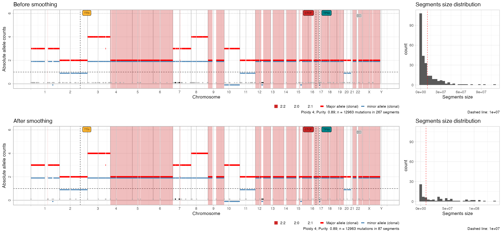
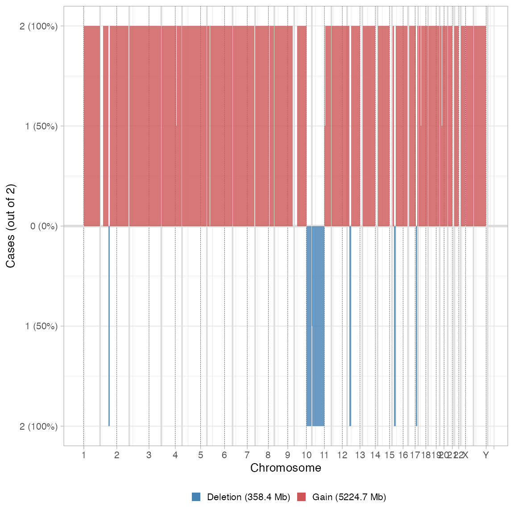

library(CNAqc)
#> ✔ Loading CNAqc, 'Copy Number Alteration quality check'. Support : <https://caravagn.github.io/CNAqc/>Smoothing merges, for each chromosome, all contiguous segments that have the same minnor and major allele counts, and are separated by up to base pairs (default , 1 megabase).
Only clonal CNAs can be smoothed; subclonal CNAs are retained but cannot be smoothed because the CCF of contiguous segments might be different.
# Before smoothing
print(x)
#> ── [ CNAqc ] MySample 12963 mutations in 267 segments (267 clonal, 0 subclonal).
#>
#> ── Clonal CNAs
#>
#> 2:2 [n = 7478, L = 1483 Mb] ■■■■■■■■■■■■■■■■■■■■■■■■■■■ { CTCF }
#> 4:2 [n = 1893, L = 331 Mb] ■■■■■■■
#> 3:2 [n = 1625, L = 357 Mb] ■■■■■■
#> 2:1 [n = 1563, L = 420 Mb] ■■■■■■ { TTN }
#> 3:0 [n = 312, L = 137 Mb] ■
#> 2:0 [n = 81, L = 39 Mb] { TP53 }
#> 16:2 [n = 4, L = 0 Mb]
#> 25:2 [n = 2, L = 1 Mb]
#> 3:1 [n = 2, L = 1 Mb]
#> 106:1 [n = 1, L = 0 Mb]
#> ℹ Sample Purity: 89% ~ Ploidy: 4.
#> ℹ There are 3 annotated driver(s) mapped to clonal CNAs.
#> chr from to ref alt DP NV VAF driver_label is_driver
#> chr2 179431633 179431634 C T 117 77 0.6581197 TTN TRUE
#> chr16 67646006 67646007 C T 120 54 0.4500000 CTCF TRUE
#> chr17 7577106 7577107 G C 84 78 0.9285714 TP53 TRUE
# After smoothing
x = smooth_segments(x, maximum_distance = 1e6) # default
#> → chr1 37 -6 @
#> → chr10 8 -3 @
#> → chr11 22 -3 @
#> → chr12 13 -11 @
#> → chr14 2 -1 @
#> → chr15 9 -3 @
#> → chr16 10 -3 @
#> → chr17 10 -6 @
#> → chr18 8 -2 @
#> → chr19 5 -2 @
#> → chr2 18 -5 @
#> → chr20 9 -2 @
#> → chr21 2 -1 @
#> → chr22 3 -3 @
#> → chr3 19 -4 @
#> → chr4 8 -2 @
#> → chr5 6 -3 @
#> → chr6 4 -2 @
#> → chr7 46 -17 @
#> → chr8 18 -3 @
#> → chr9 3 -2 @
#> → chrX 6 -2 @
#> ✔ Smoothed from 267 to 87 segments with 1e+06 gap (bases).
#> ℹ Creating a new CNAqc object. The old object will be retained in the $before_smoothing field.
#>
#> ── CNAqc - CNA Quality Check ───────────────────────────────────────────────────
#> ℹ Using reference genome coordinates for: hg19.
#> ✔ Found annotated driver mutations: TTN, CTCF, and TP53.
#> ✔ Fortified calls for 12963 somatic mutations: 12963 SNVs (100%) and 0 indels.
#> ✔ Fortified CNAs for 87 segments: 87 clonal and 0 subclonal.
#> Warning in map_mutations_to_clonal_segments(mutations, cna_clonal): [CNAqc] a
#> karyotype column is present in CNA calls, and will be overwritten
#> ✔ 12963 mutations mapped to clonal CNAs.The old CNAqc object is retained inside the new one
print(x$before_smoothing)
#> ── [ CNAqc ] MySample 12963 mutations in 267 segments (267 clonal, 0 subclonal).
#>
#> ── Clonal CNAs
#>
#> 2:2 [n = 7478, L = 1483 Mb] ■■■■■■■■■■■■■■■■■■■■■■■■■■■ { CTCF }
#> 4:2 [n = 1893, L = 331 Mb] ■■■■■■■
#> 3:2 [n = 1625, L = 357 Mb] ■■■■■■
#> 2:1 [n = 1563, L = 420 Mb] ■■■■■■ { TTN }
#> 3:0 [n = 312, L = 137 Mb] ■
#> 2:0 [n = 81, L = 39 Mb] { TP53 }
#> 16:2 [n = 4, L = 0 Mb]
#> 25:2 [n = 2, L = 1 Mb]
#> 3:1 [n = 2, L = 1 Mb]
#> 106:1 [n = 1, L = 0 Mb]
#> ℹ Sample Purity: 89% ~ Ploidy: 4.
#> ℹ There are 3 annotated driver(s) mapped to clonal CNAs.
#> chr from to ref alt DP NV VAF driver_label is_driver
#> chr2 179431633 179431634 C T 117 77 0.6581197 TTN TRUE
#> chr16 67646006 67646007 C T 120 54 0.4500000 CTCF TRUE
#> chr17 7577106 7577107 G C 84 78 0.9285714 TP53 TRUE
# The new one should have fewer segments
print(x)
#> ── [ CNAqc ] MySample 12963 mutations in 87 segments (87 clonal, 0 subclonal). G
#>
#> ── Clonal CNAs
#>
#> 2:2 [n = 7478, L = 1493 Mb] ■■■■■■■■■■■■■■■■■■■■■■■■■■■ { CTCF }
#> 4:2 [n = 1893, L = 333 Mb] ■■■■■■■
#> 3:2 [n = 1625, L = 362 Mb] ■■■■■■
#> 2:1 [n = 1563, L = 424 Mb] ■■■■■■ { TTN }
#> 3:0 [n = 312, L = 139 Mb] ■
#> 2:0 [n = 81, L = 39 Mb] { TP53 }
#> 16:2 [n = 4, L = 0 Mb]
#> 25:2 [n = 2, L = 1 Mb]
#> 3:1 [n = 2, L = 1 Mb]
#> 106:1 [n = 1, L = 0 Mb]
#> ℹ Sample Purity: 89% ~ Ploidy: 4.
#> ℹ There are 3 annotated driver(s) mapped to clonal CNAs.
#> chr from to ref alt DP NV VAF driver_label is_driver
#> chr2 179431633 179431634 C T 117 77 0.6581197 TTN TRUE
#> chr16 67646006 67646007 C T 120 54 0.4500000 CTCF TRUE
#> chr17 7577106 7577107 G C 84 78 0.9285714 TP53 TRUE
#> ✔ These segments are smoothed; before smoothing there were 267 segments.You can visualise the effect of the smoothing.
plot_smoothing(x)
#> Warning: Using `size` aesthetic for lines was deprecated in ggplot2 3.4.0.
#> ℹ Please use `linewidth` instead.
#> ℹ The deprecated feature was likely used in the CNAqc package.
#> Please report the issue at <https://github.com/caravagnalab/CNAqc/issues>.
#> This warning is displayed once every 8 hours.
#> Call `lifecycle::last_lifecycle_warnings()` to see where this warning was
#> generated.
#> Scale for fill is already present.
#> Adding another scale for fill, which will replace the existing scale.
#> Scale for fill is already present.
#> Adding another scale for fill, which will replace the existing scale.
plot_multisample_CNA(list(`Before` = x$before_smoothing, `After` = x))
#>
#> ── Breaking input segments at 100 Kb resolution
#> Warning: replacing previous import 'cli::num_ansi_colors' by
#> 'crayon::num_ansi_colors' when loading 'easypar'